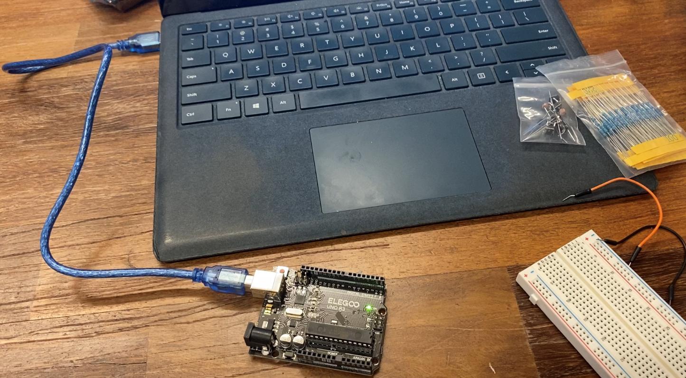
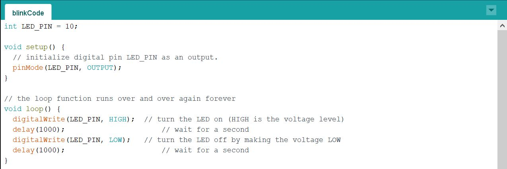
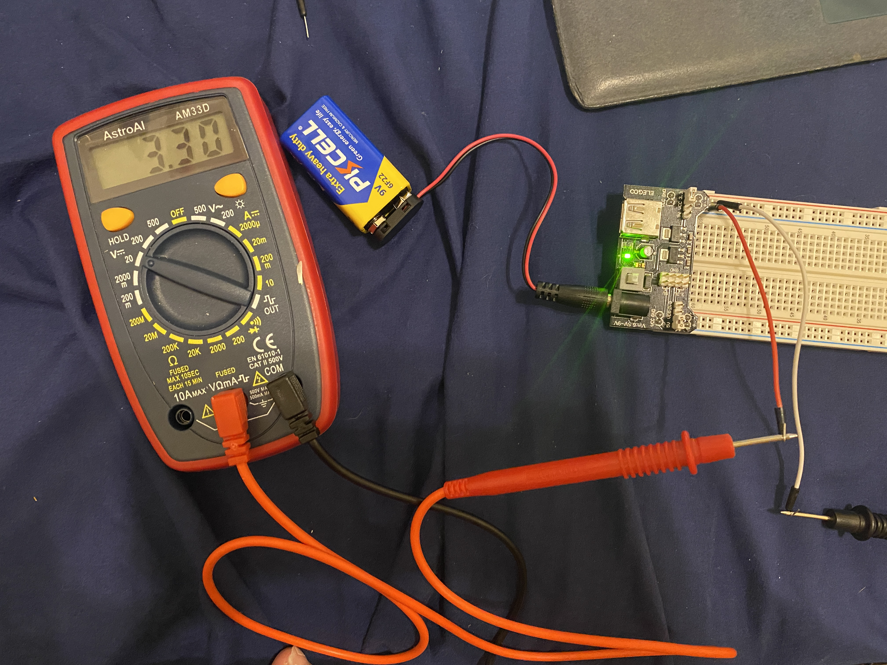
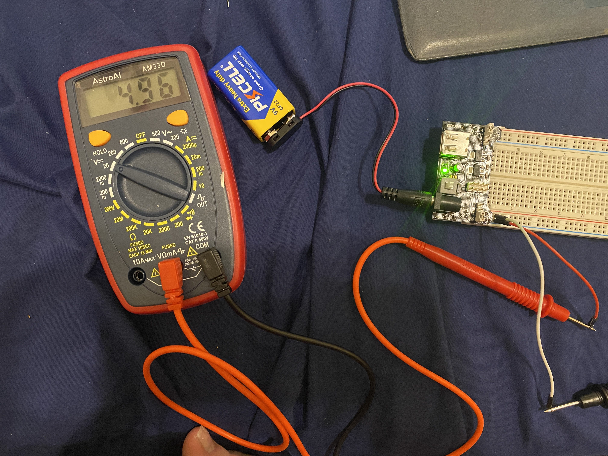

Lab 2 introduces Arduino, its Integrated Development Environment (IDE), and digital I/O on the Arduino. It sets up the workflow of programming an Arduino. Also, this labs teaches how to manipulate and snese the Arduino's digital pins. Finally, it shows how to create an LED reaction game to test reflexes.
I first set up the Arduino IDE, and I connected my board to my laptop using the USB cable. Below is a picture of the board with the green light on, which indicates it is powered on.
Next, I used the Arduino "blink" sample code to get the orange LED on the board to blink repeatedly. A video is shown below.
This portion of the lab consisted of using Digital Output to blink an external LED. The term Digital implies binary. It can be 1 or 0, or HIGH or LOW, which are called levels. In terms of electricity, however, HIGH means a certain voltage (could be 3.3V or 5V or more), while LOW means 0V. In the Arduino, we can program the digital pins to be HIGH/LOW, which will turn that pin to 5V (HIGH), or 0V (LOW). In order to get the LED connected to the Arduino to blink, I modified the "blink" sample code from earlier in the lab. In order to get the LED to blink on pin 10, I first declared a global variable equal to 10 outside both functions. Then, I replaced "LED_BUILTIN" with "LED_PIN," whcih is the name of the variable. My code and a video of the LED blinking are pictured below.
Next, I wanted to change the blinking period for the LED. I decreased the delay to 100 ms, so the LED blinked much faster. The new code and video of the LED blinking faster are pcitured below.

Lab 1 introduces electronics and simple circuits. It explores how current flows through components and how to control the path of electricity. In this lab, I began by learning how to properly set up a power supply using a 9V battery and a Power Supply Module. Then, I learned how to create simple circuits using first a 3.3V power supply then a 5V power supply and different resistors. Finally, I learned how to incorporate a switch in the form of a button in order to turn the LED on and off using the button.
First, I connected the Power Supply Module, which is capable of converting the 9V battery to both 5V and 3.3V, to the breadboard. I did it such that the '+' and '-' symbols on both sides of the module matched the '+' (red) and '-' (blue) markings on the breadboard. Then, I connected the 9V battery to the barrel jack connector on the power module. I pressed the white on/off button on the module to ensure that the power was working. I knew this because the green LED on the power module turned on when power was being supplied. The correct set up is pictured below.

Next, I connected two jumper wires and connected one end of each to a pin on the blue/red power lines on the breadboard. I used the multimeter to probe the two jumper wires to test the voltage on either side to ensure one side was reading around 3.3V, and the other side was reading around 5V. My measurments are pictured below.  
This portion of the lab required calculating the amount of resistance required to properly set up a circuit with a LED. A resistor is required to control the current flowing through the LED, so that it doesn't 'blow up' from too much current. The calculation for the amount of resistance required can be performed using Ohm's Law: V = IR. The LEDs I used for this lab had a max current rating of 40 mA, so a current of about 20 mA t0 35 mA was appropriate for safely running the LED. Below is the calculation provided for determining the resistance requried when powering the LED with a 3.3V source.
V = I * R
R = V / I
R = 3.3V / 30 mA = 110 Ohm
Because I did not have a 110 Ohm reistor, I set up the circuit using a 100 Ohm resistor. Below is a schematic of the circuit and a picture of the physical circuit I created.
I next created a circuit for the LED using the 5V power source. I started by calculating the resistance required using a 5V power sources and a current of 20 mA. Then, I calculate the resistance required using a 5V power sources and a current of 35 mA. I averaged the two resistance values, and I chose a resistor that was close to that average. Below are my calculations.
V = I * R
R = V / I
R = 5V / 20 mA = 250 Ohm
R = 5V / 35 mA = 140 Ohm
Average = ((250 Ohm + 140 Ohm) / 2) = 195 Ohm
Because I did not have a 195 Ohm reistor, I set up the circuit using a 220 Ohm resistor. Below is a schematic of the circuit and a picture of the physical circuit I created.
In this part of the lab, I learned how to control the LED by turning it on/off using a switch. The switch I used was a Push Button, a Single-pole, single-throw (SPST) switch. This means it has one output and one input. It is also a type of momentary switch, which means it is only connected when it is pushed down. I incorporated the push button into the 3.3V source and 100 Ohm resistor circuit as shown below.
Over the course of the lab, I only encountered a few problems. First, it was difficult to use the multimeter because it was hard to hold the jumper cables to the multimeter. On top of that, taking a photo while already using both my hands to hold the multimeter proved to be difficult. I was able to solve this problem by having another student take the photo, and I was able to hold the jumper cables to the grooves after some practice. Another issue I encountered was inserting items into the bread board. The wires on the resistors tended to bend before being completely inserted into the holes on the breadboard. In the end, it simply took practice to be able to build the circuits. Overall, I found this lab fairly easy to complete. The circuits were simple, and I feel that I accopmlished the lab's goal of learning how current flows through components and controlling the path of electricity. I built circuits using a LED, and I learned how to incorporate a switch in the form of a button in order to turn the LED on and off.